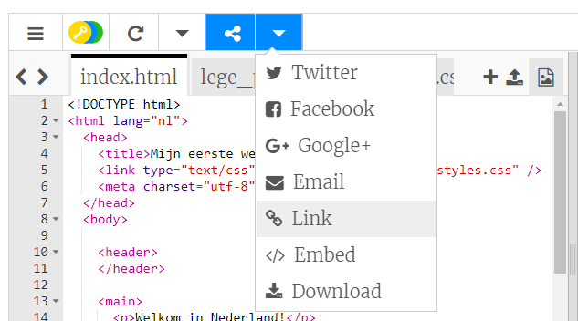

Ga naar de start trinket. De voorbeelden komen vooral uit dit project.
Je kunt je werk bewaren door in het menu 'Share' op 'Link' te klikken. Je krijgt een link die je ergens kunt opslaan, bijvoorbeeld in een document of kunt versturen via e-mail.
Let op! Elke keer als je iets aanpast, krijg je een nieuwe link.
Dit hoef je niet per se te doen. Maar als je een account op Trinket wilt maken, volg je de onderstaande stappen. Hierdoor kun je eenvoudig vanaf elke computer toegang krijgen tot je werk en projecten die iemand anders met jou heeft gedeeld remixen. Remixen betekent dat je een kopie van een project opslaat zodat je je eigen wijzigingen kunt aanbrengen.